The Basics¶
This tutorial assumes that you know most of these things. If you don’t, that’s not a problem at all and you can just keep the basics page open while you read other chapters.
Equality and stuff¶
I’m quite sure you know or you can guess what  , , ,
and mean so I won’t explain those. The equivalent of
, , ,
and mean so I won’t explain those. The equivalent of a != b in
programming is 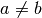 in math. means that  and
and  are
close to each other, but it doesn’t contain any information about how close
to each other the values are.
are
close to each other, but it doesn’t contain any information about how close
to each other the values are.
+, -¶
Be careful when you have a minus in front of parentheses, e.g.  .
.
If we have something like  we know that’s just
we know that’s just  because we’re
adding and then we’re taking it away. Later you’ll notice that we end up
with this
because we’re
adding and then we’re taking it away. Later you’ll notice that we end up
with this  pattern surprisingly often and things become nice and simple.
pattern surprisingly often and things become nice and simple.
In general, you can move things around like this:
You get the idea: we can put ,  and to any order we want, and for
convenience, we usually write e.g.
and to any order we want, and for
convenience, we usually write e.g.  instead of 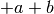.
instead of 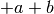.
*, /¶
In this tutorial, a/b is written as  or
or  , and
, and a*b is
written as  or simply
or simply  .
.
Some handy stuff:


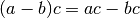

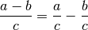
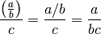
You can use these rules left-to-right or right-to-left. For example, if you
want to calculate  you know you could also do
you know you could also do
 , but you can also calculate
like .
, but you can also calculate
like .
Note that there is no 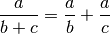 rule; that doesn’t work. This also applies to 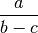.
It’s often best to look at which numbers are below a division line and which
aren’t. For example, if we have 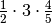 we know
that’s  because 2 and 5 were below the
lines but other numbers weren’t.
because 2 and 5 were below the
lines but other numbers weren’t.
If both the top and bottom are being multiplied by something you can get rid of that multiplier. For example:

Remember that you cannot divide anything by zero. See Numberphile’s awesome zero video if you’re wondering why.
Negative numbers behave like this when multiplied and divided. Note how the two -‘s cancel out.


Absolute Value¶
The absolute value of  is
is  in math and something like
in math and something like abs(x) or
Math.abs(x) in most programming languages. It’s easiest to think of the
absolute value as stripping off the minus sign. For example,  and
and
 .
.
Powers and Square Root¶
 is
is x**y or pow(x, y) and  is
is sqrt(x) in most
programming languages.

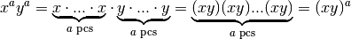
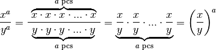


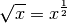
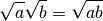
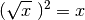

If you’re wondering why anything to the power of 0 is 1, you can do e.g.
 . The equation should be true with any , so
. The equation should be true with any , so
 must be 1 because
must be 1 because  .
.
It’s easiest to think of as the non-negative number that is when
multiplied with itself. For example, 3 is not negative, so 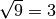
because . Similarly e.g. 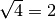, 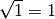 and
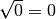. No number produces a negative number when multiplied with
itself, so you cannot do 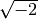 (unless you use complex numbers, but they
are beyond the scope of this tutorial).
You’re probably wondering how the heck our  rule works. This
example should explain everything:
rule works. This
example should explain everything:

Functions¶
Here’s a typical math function:
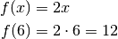
There is no special syntax for defining a function. All we have is the equal sign, and when defining a function we just say that its value at x is equal to something.
If you’re familiar with a functional programming language like Haskell, then you’ll probably realize that the above math looks a lot like this Haskell session:
Prelude> let f x = 2*x
Prelude> f 6
12
Prelude>
If you’re feeling like WTF is this, here’s a Python session that should make everything clear.
>>> def f(x):
... return 2*x
...
>>> f(6)
12
Quick note about f(x) versus f x: if you define your own function
called  or
or  you should use
you should use  , but you can do e.g.
, but you can do e.g.  or
or
 with some “special” functions for historical reasons.
with some “special” functions for historical reasons.
Also note that mathematicians prefer single-letter variable names because math was originally written on paper, and writing long things by hand sucks. Again, this doesn’t apply to the “special” functions.
Solving Equations¶
For example, if you know that  you can find like this:
you can find like this:


The idea here is that if  then 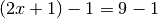; that is,
then 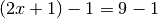; that is,  . So you
can do pretty much anything to both sides of the
. So you
can do pretty much anything to both sides of the  and the equality will
still work. I started by substracting 1 from both sides and then I divided
everything by 2.
and the equality will
still work. I started by substracting 1 from both sides and then I divided
everything by 2.
Normal limitations apply here; for example, if you have and you divide
by you get 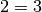 and it seems like no can satisfy the equation.
However, you cannot divide by  and turns out that
and turns out that  is a valid solution
because and .
is a valid solution
because and .
You can also apply most functions to both sides. For example, you can do this
with  :
:


See Also¶
This chapter shows only the things you need in the rest of this tutorial, but this cheat sheet is more complete.